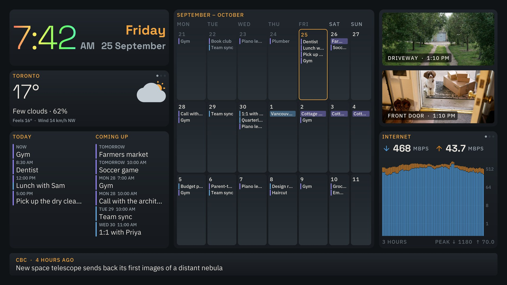
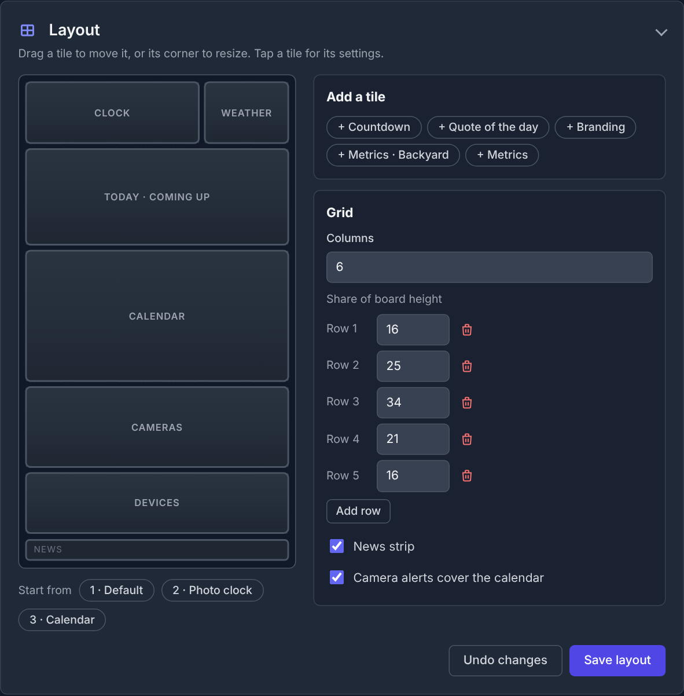

Start with what you need
Choose a starting layout and add the widgets that matter to you.
Weather, Calendar, News, Security Cameras and more!

Pick a layout, then how your screen is turned and which theme suits the room.
No code. No complicated configuration. Arrange your screen visually, choose the tiles you want, and get on with your day.

Choose a starting layout and add the widgets that matter to you.
Move tiles, adjust their size and shape the screen without writing code.
Show the essentials at a glance. Add more only when you want to.
Turn a kitchen TV, family tablet or spare screen into the place everyone checks before heading out the door.
Give your team one shared view of the information that keeps things moving. QRK Board makes powerful dashboards accessible without enterprise-sized complexity or cost.
No need to pay for features you don't use. Start with a useful free dashboard and upgrade for advanced capabilities.
The family essentials, on your screen.
Live camera views on the screen you already look at.
Turn a display into a professional information hub.
Prices to be announced.
QRK Board is built around a simple principle: your dashboard should serve you, not collect information about you. We don't collect user data.
Read the privacy page →We'll explain what the app stores, how connected data sources work and what any third-party services may process.
QRK Board is designed for Android TV, Google TV, Amazon Fire TV, Android tablets and Raspberry Pi. Check the setup instructions for the requirements and availability of each platform.
The everyday home dashboard features are free. Cameras (camera views and alerts) and Pro (custom branding and API-powered metrics) are separate monthly subscriptions.
No. You can arrange dashboard tiles with the drag-and-drop layout editor. Connecting custom data sources may require API details and some technical knowledge.
Cameras is designed to support compatible Reolink camera feeds and webhook-triggered alerts; Pro adds metrics from REST APIs, GraphQL and InfluxDB. Compatibility depends on the camera, endpoint and configuration.
QRK Board is designed not to collect user data. The full privacy policy should describe device storage, hosting logs, connected data sources and any third-party services so you can understand the complete picture.
Start with the essentials. Make the layout yours. Add more power when you're ready.